openEuler 22.03 LTS SP3（华为欧拉）一键安装 Oracle 19C（19.22） 数据库
前言
Oracle 一键安装脚本，演示 openEuler 22.03 LTS SP3 一键安装 Oracle 19C 单机版过程（全程无需人工干预）：（脚本包括 ORALCE PSU/OJVM 等补丁自动安装）
⭐️ 脚本下载地址：Shell脚本安装Oracle数据库
脚本第三代支持 N 节点一键安装，不限制节点数！

安装准备
- 1、安装好操作系统，建议安装图形化
- 2、配置好网络
- 3、挂载本地 ISO 镜像源
- 4、上传软件安装包（安装基础包，补丁包：35926646、35943157、6880880）
- 5、上传一键安装脚本：OracleShellInstall
✨ 偷懒可以直接下载本文安装包合集：openEuler 22.03 LTS SP3 安装 Oracle 19C（19.22） 单机版安装包合集（包含补丁！！！）
OpenEuler 22.03 LTS SP3 操作系统安装
加载 ISO 镜像进入安装流程：
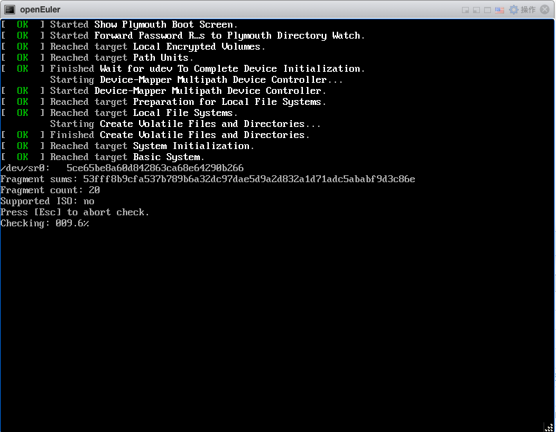
安装前检查：
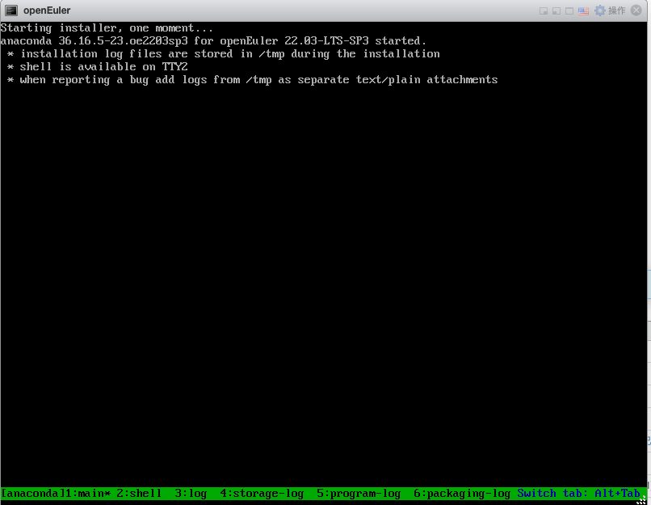
选择系统安装语言：中文
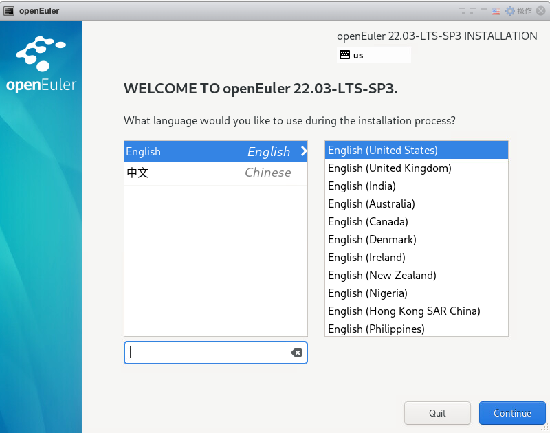
进入安装界面，选择配置安装目的地：
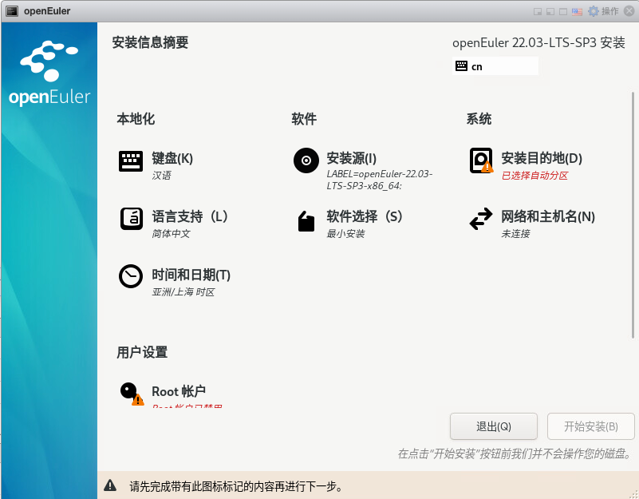
选择自定义配置：
点击自动创建分区：
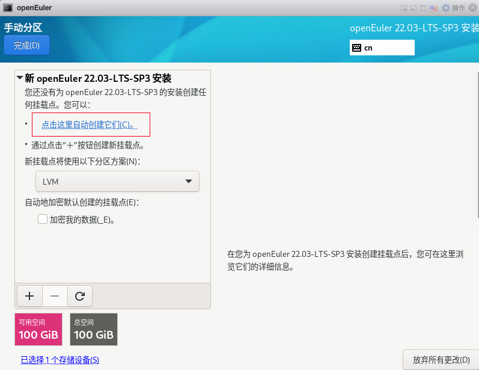
删除 /home 分区目录：
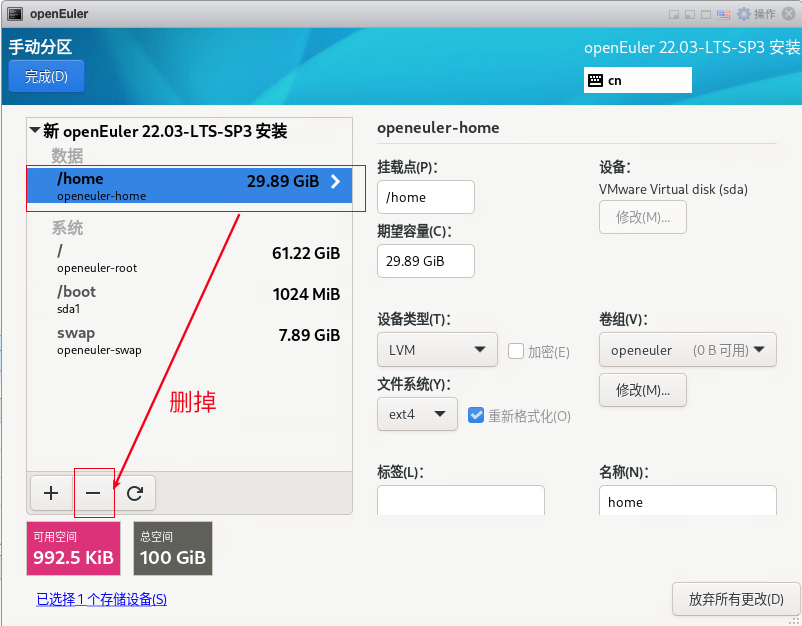
调整 swap 大小与内存一致：
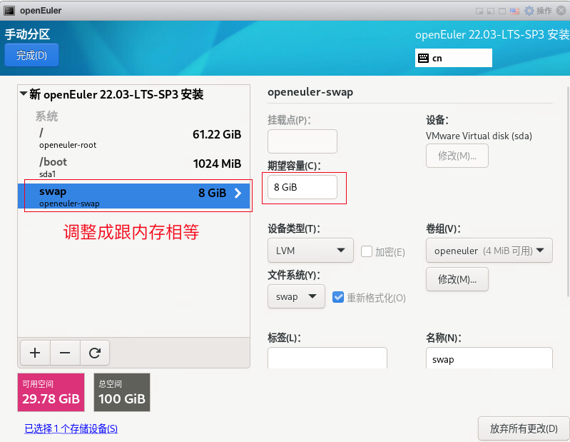
分配剩余空间给根目录：
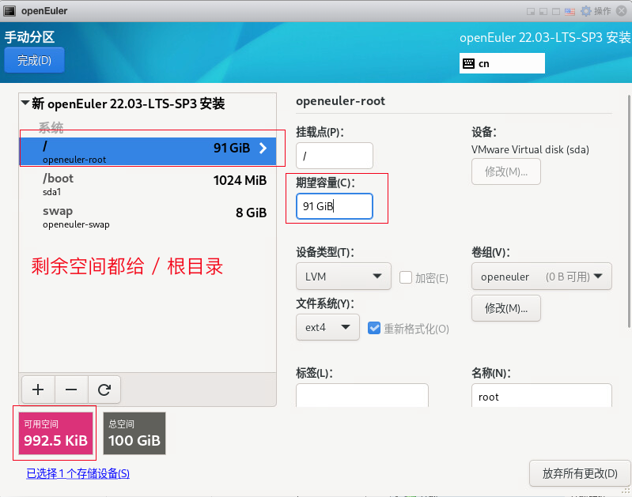
配置完成，开始创建分区：
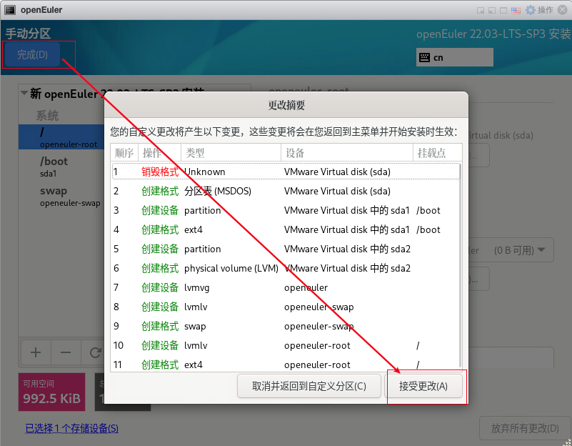
软件选择，安装模式选择服务器：
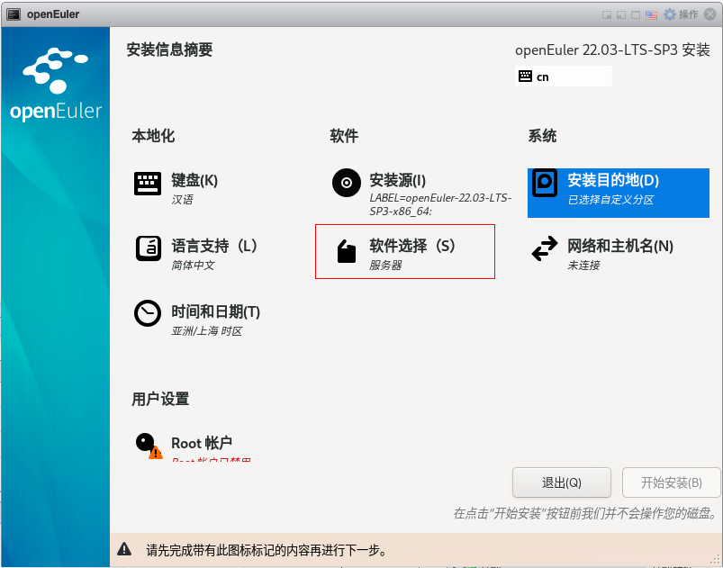
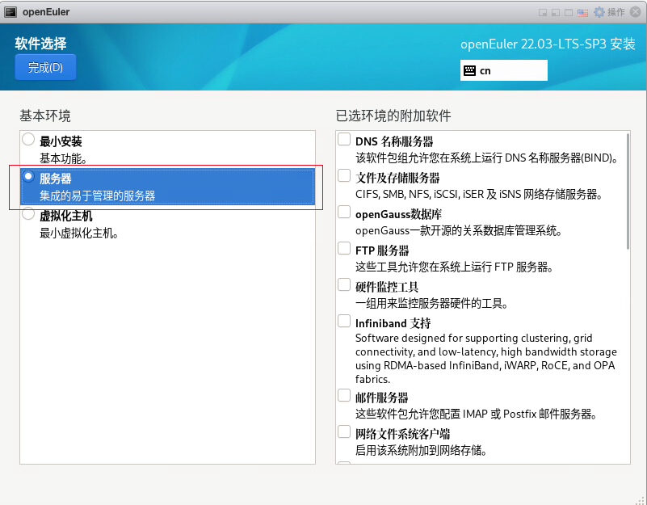
配置主机名和网络：
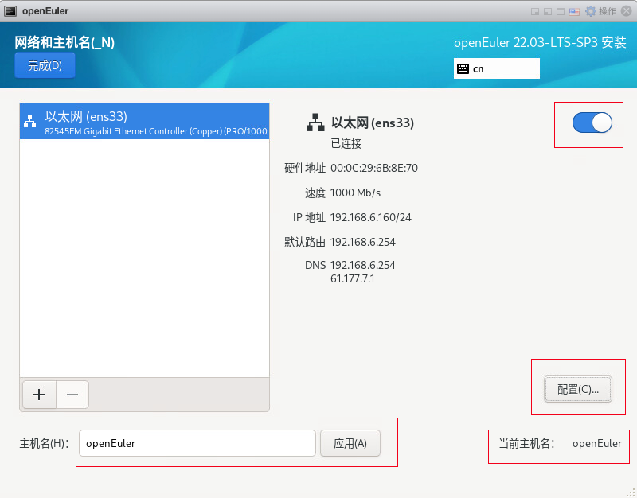
配置网卡自动连接：
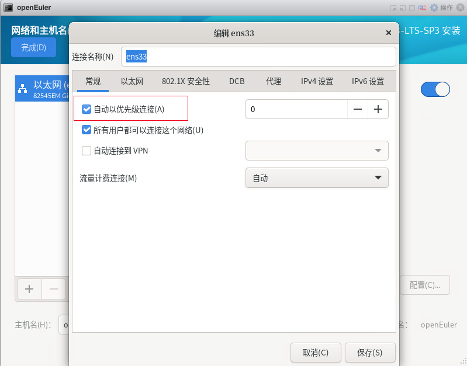
配置网络 IPV4：
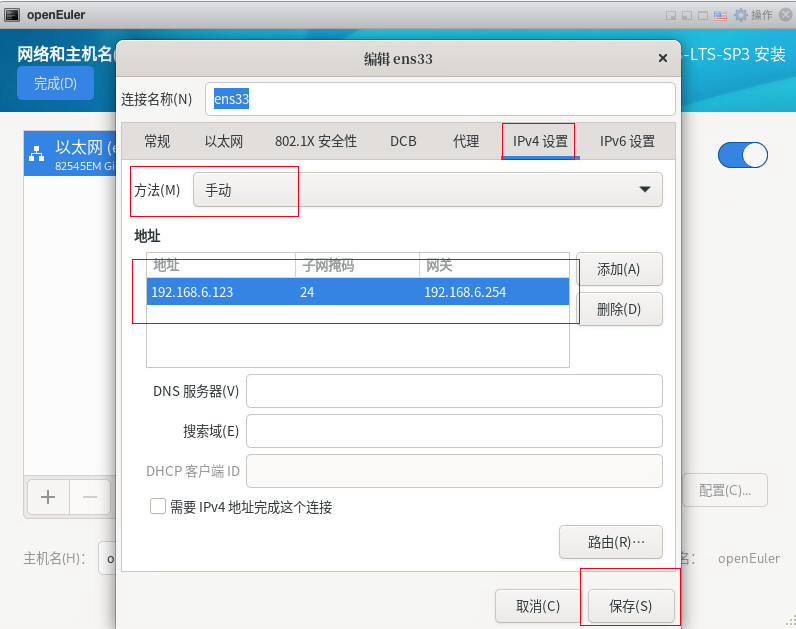
保存配置信息：
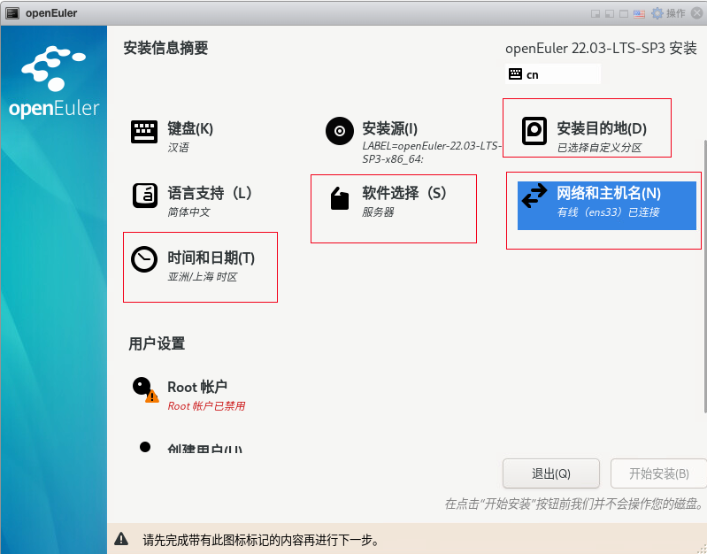
启用 root 用户，配置 root 密码：
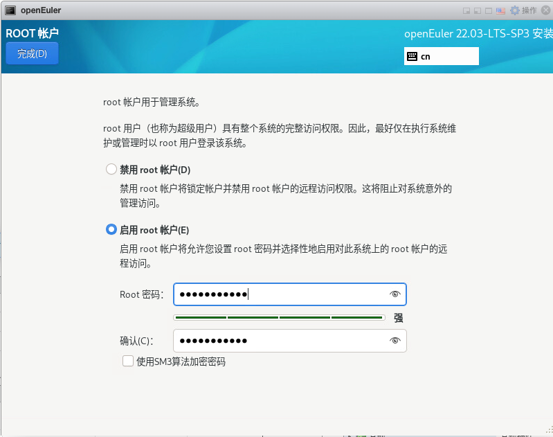
创建用户 lucifer，配置密码：
正式开始安装系统：
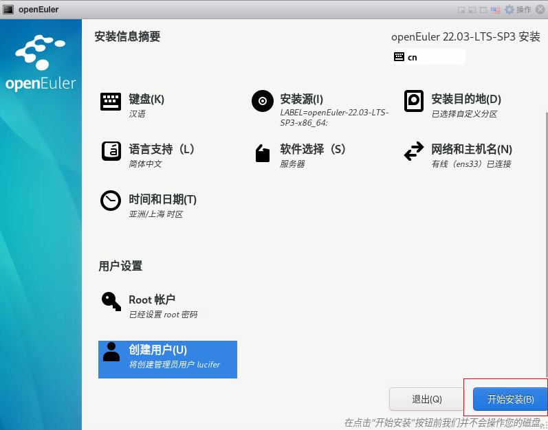
安装完成，重启系统：
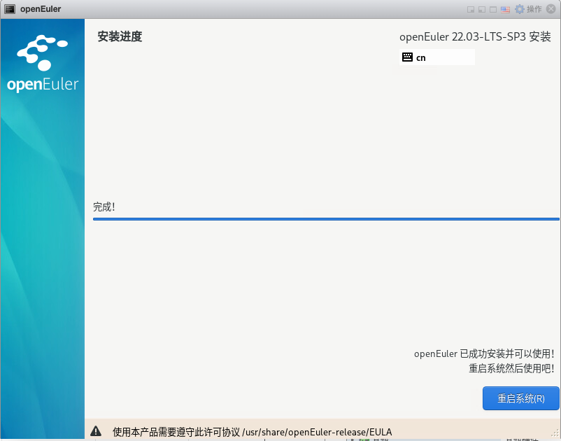
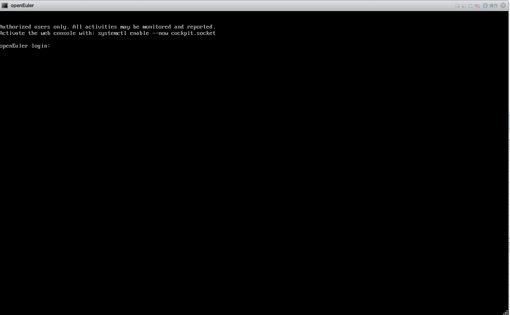
输入 root 账户密码进入系统：
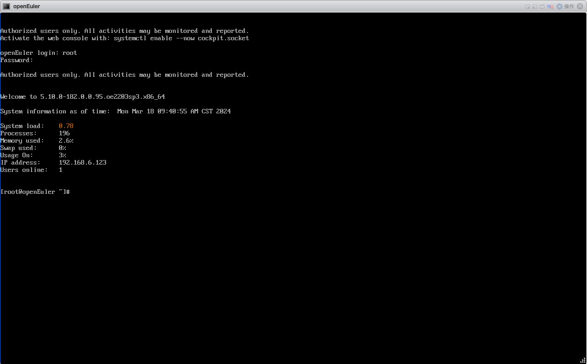
openEuler 22.03 LTS SP3 默认没有图形化界面，openEuler 安装桌面环境图形化界面【ukui】：
## 前提是需要联网，配置网络 yum 源
## 安装字体文件
yum groupinstall fonts -y
## 设置默认桌面图形化界面
systemctl set-default graphical.target
## 安装UKUI的桌面图形环境
yum install ukui -y
演示环境信息
# 主机版本
[root@openEuler soft]# cat /etc/openEuler-release
openEuler release 22.03 (LTS-SP3)
# 网络信息
[root@openEuler soft]# ip a
2: ens33: <BROADCAST,MULTICAST,UP,LOWER_UP> mtu 1500 qdisc fq_codel state UP group default qlen 1000
link/ether 00:0c:29:6b:8e:70 brd ff:ff:ff:ff:ff:ff
inet 192.168.6.123/24 brd 192.168.6.255 scope global noprefixroute ens33
valid_lft forever preferred_lft forever
inet6 fe80::20c:29ff:fe6b:8e70/64 scope link noprefixroute
valid_lft forever preferred_lft forever
# 挂载本地 ISO 镜像
[root@openEuler soft]# mount | grep iso | grep -v "/run/media"
/dev/sr0 on /mnt type iso9660 (ro,relatime,nojoliet,check=s,map=n,blocksize=2048,iocharset=utf8)
[root@openEuler soft]# df -h|grep /mnt
/dev/sr0 18G 18G 0 100% /mnt
# 安装包存放在 /soft 目录下
[root@openEuler ~]# cd /soft/
[root@openEuler soft]# ll
总用量 5013032
-rwx------. 1 root root 3059705302 3月 18 09:51 LINUX.X64_193000_db_home.zip
-rwxr-xr-x. 1 root root 163165 3月 18 09:52 OracleShellInstall
-rwx------. 1 root root 127451050 3月 18 09:50 p35926646_190000_Linux-x86-64.zip
-rwx------. 1 root root 1817908992 3月 18 09:51 p35943157_190000_Linux-x86-64.zip
-rwx------. 1 root root 127774864 3月 18 09:50 p6880880_190000_Linux-x86-64.zip
-rwx------. 1 root root 321590 3月 18 09:51 rlwrap-0.44.tar.gz
确保安装环境准备完成后，即可执行一键安装。
安装命令
使用标准生产环境安装参数：
# 根据脚本 README 或者 -h 命令提示，编辑好一键安装命令，进入 /soft 目录执行安装：
./OracleShellInstall -lf ens33 `# local ip ifname`\
-n openEuler `# hostname`\
-op welcome1 `# oracle password`\
-d /u01 `# software base dir`\
-ord /oradata `# data dir`\
-o lucifer `# dbname`\
-dp welcome1 `# sys/system password`\
-ds AL32UTF8 `# database character`\
-ns AL16UTF16 `# national character`\
-redo 100 `# redo size`\
-opa 35943157 `# oracle PSU/RU`\
-jpa 35926646 `# OJVM PSU/RU`\
-opd Y `# optimize db`
选择需要安装的模式以及版本，即可开始安装：

安装过程
███████ ██ ████████ ██ ██ ██ ██ ██ ██ ██
██░░░░░██ ░██ ██░░░░░░ ░██ ░██ ░██░██ ░██ ░██ ░██
██ ░░██ ██████ ██████ █████ ░██ █████ ░██ ░██ █████ ░██ ░██░██ ███████ ██████ ██████ ██████ ░██ ░██
░██ ░██░░██░░█ ░░░░░░██ ██░░░██ ░██ ██░░░██░█████████░██████ ██░░░██ ░██ ░██░██░░██░░░██ ██░░░░ ░░░██░ ░░░░░░██ ░██ ░██
░██ ░██ ░██ ░ ███████ ░██ ░░ ░██░███████░░░░░░░░██░██░░░██░███████ ░██ ░██░██ ░██ ░██░░█████ ░██ ███████ ░██ ░██
░░██ ██ ░██ ██░░░░██ ░██ ██ ░██░██░░░░ ░██░██ ░██░██░░░░ ░██ ░██░██ ░██ ░██ ░░░░░██ ░██ ██░░░░██ ░██ ░██
░░███████ ░███ ░░████████░░█████ ███░░██████ ████████ ░██ ░██░░██████ ███ ███░██ ███ ░██ ██████ ░░██ ░░████████ ███ ███
░░░░░░░ ░░░ ░░░░░░░░ ░░░░░ ░░░ ░░░░░░ ░░░░░░░░ ░░ ░░ ░░░░░░ ░░░ ░░░ ░░ ░░░ ░░ ░░░░░░ ░░ ░░░░░░░░ ░░░ ░░░
请选择安装模式 [单机(si)/单机ASM(sa)/集群(rac)] : si
数据库安装模式: single
请选择数据库版本 [11/12/19/21] : 19
数据库版本: 19
#==============================================================#
配置本地 YUM 源
#==============================================================#
[openEuler]
name=openEuler
baseurl=file:////mnt
enabled=1
gpgcheck=1
gpgkey=file:////mnt/RPM-GPG-KEY-openEuler
#==============================================================#
禁用防火墙
#==============================================================#
○ firewalld.service - firewalld - dynamic firewall daemon
Loaded: loaded (/usr/lib/systemd/system/firewalld.service; disabled; vendor preset: enabled)
Active: inactive (dead)
Docs: man:firewalld(1)
3月 18 09:39:25 openEuler systemd[1]: Starting firewalld - dynamic firewall daemon...
3月 18 09:39:26 openEuler systemd[1]: Started firewalld - dynamic firewall daemon.
3月 18 11:04:06 openEuler systemd[1]: Stopping firewalld - dynamic firewall daemon...
3月 18 11:04:07 openEuler systemd[1]: firewalld.service: Deactivated successfully.
3月 18 11:04:07 openEuler systemd[1]: Stopped firewalld - dynamic firewall daemon.
#==============================================================#
禁用 SELinux
#==============================================================#
SELinux status: enabled
SELinuxfs mount: /sys/fs/selinux
SELinux root directory: /etc/selinux
Loaded policy name: targeted
Current mode: permissive
Mode from config file: disabled
Policy MLS status: enabled
Policy deny_unknown status: allowed
Memory protection checking: actual (secure)
Max kernel policy version: 33
#==============================================================#
YUM 静默安装依赖包
#==============================================================#
bc-1.07.1-12.oe2203sp3.x86_64
binutils-2.37-24.oe2203sp3.x86_64
未安装软件包 compat-libcap1
gcc-10.3.1-49.oe2203sp3.x86_64
gcc-c++-10.3.1-49.oe2203sp3.x86_64
未安装软件包 elfutils-libelf
未安装软件包 elfutils-libelf-devel
glibc-2.34-143.oe2203sp3.x86_64
glibc-devel-2.34-143.oe2203sp3.x86_64
libaio-0.3.113-9.oe2203sp3.x86_64
libaio-devel-0.3.113-9.oe2203sp3.x86_64
libgcc-10.3.1-49.oe2203sp3.x86_64
libstdc++-10.3.1-49.oe2203sp3.x86_64
libstdc++-devel-10.3.1-49.oe2203sp3.x86_64
libxcb-1.15-1.oe2203sp3.x86_64
libX11-1.7.2-8.oe2203sp3.x86_64
libXau-1.0.10-1.oe2203sp3.x86_64
libXi-1.8-2.oe2203sp3.x86_64
libXrender-0.9.10-12.oe2203sp3.x86_64
make-4.3-4.oe2203sp3.x86_64
net-tools-2.10-3.oe2203sp3.x86_64
smartmontools-7.2-2.oe2203sp3.x86_64
sysstat-12.5.4-9.oe2203sp3.x86_64
e2fsprogs-1.46.4-24.oe2203sp3.x86_64
未安装软件包 e2fsprogs-libs
unzip-6.0-50.oe2203sp3.x86_64
openssh-clients-8.8p1-23.oe2203sp3.x86_64
readline-8.1-3.oe2203sp3.x86_64
readline-devel-8.1-3.oe2203sp3.x86_64
psmisc-23.5-2.oe2203sp3.x86_64
ksh-2020.0.0-10.oe2203sp3.x86_64
nfs-utils-2.5.4-15.oe2203sp3.x86_64
tar-1.34-5.oe2203sp3.x86_64
未安装软件包 device-mapper-multipath
avahi-0.8-18.oe2203sp3.x86_64
ntp-4.2.8p15-13.oe2203sp3.x86_64
chrony-4.1-6.oe2203sp3.x86_64
libXtst-1.2.4-1.oe2203sp3.x86_64
libXrender-devel-0.9.10-12.oe2203sp3.x86_64
fontconfig-devel-2.13.94-3.oe2203sp3.x86_64
policycoreutils-3.3-8.oe2203sp3.x86_64
未安装软件包 policycoreutils-python
未安装软件包 librdmacm
未安装软件包 libnsl*
未安装软件包 libibverbs
未安装软件包 compat-openssl10
policycoreutils-python-utils-3.3-8.oe2203sp3.noarch
#==============================================================#
配置主机名
#==============================================================#
openEuler
#==============================================================#
配置 /etc/hosts 文件
#==============================================================#
127.0.0.1 localhost localhost.localdomain localhost4 localhost4.localdomain4
::1 localhost localhost.localdomain localhost6 localhost6.localdomain6
## OracleBegin
## Public IP
192.168.6.123 openEuler
#==============================================================#
创建用户和组
#==============================================================#
oracle 用户：
用户id=54321(oracle) 组id=54321(oinstall) 组=54321(oinstall),54322(dba),54323(oper),54324(backupdba),54325(dgdba),54326(kmdba),54330(racdba)
#==============================================================#
配置 Avahi-daemon 服务
#==============================================================#
○ avahi-daemon.service - Avahi mDNS/DNS-SD Stack
Loaded: loaded (/usr/lib/systemd/system/avahi-daemon.service; disabled; vendor preset: enabled)
Active: inactive (dead)
TriggeredBy: ○ avahi-daemon.socket
#==============================================================#
配置透明大页 && NUMA && 磁盘 IO 调度器
#==============================================================#
args="ro resume=/dev/mapper/openeuler-swap rd.lvm.lv=openeuler/root rd.lvm.lv=openeuler/swap cgroup_disable=files apparmor=0 crashkernel=512M rhgb quiet numa=off transparent_hugepage=never elevator=deadline"
-resume=/dev/mapper/openeuler-swap
-args="ro
args="ro resume=/dev/mapper/openeuler-swap rd.lvm.lv=openeuler/root rd.lvm.lv=openeuler/swap cgroup_disable=files apparmor=0 crashkernel=512M rhgb quiet numa=off transparent_hugepage=never elevator=deadline"
-rhgb
-crashkernel=512M
#==============================================================#
配置 sysctl.conf
#==============================================================#
kernel.sysrq = 0
net.ipv4.ip_forward = 0
net.ipv4.conf.all.send_redirects = 0
net.ipv4.conf.default.send_redirects = 0
net.ipv4.conf.all.accept_source_route = 0
net.ipv4.conf.default.accept_source_route = 0
net.ipv4.conf.all.accept_redirects = 0
net.ipv4.conf.default.accept_redirects = 0
net.ipv4.conf.all.secure_redirects = 0
net.ipv4.conf.default.secure_redirects = 0
net.ipv4.icmp_echo_ignore_broadcasts = 1
net.ipv4.icmp_ignore_bogus_error_responses = 1
net.ipv4.conf.all.rp_filter = 1
net.ipv4.conf.default.rp_filter = 1
net.ipv4.tcp_syncookies = 1
kernel.dmesg_restrict = 1
net.ipv6.conf.all.accept_redirects = 0
net.ipv6.conf.default.accept_redirects = 0
fs.aio-max-nr = 1048576
fs.file-max = 6815744
kernel.shmall = 2097152
kernel.shmmax = 7795081215
kernel.shmmni = 4096
kernel.sem = 250 32000 100 128
net.ipv4.ip_local_port_range = 9000 65500
net.core.rmem_default = 262144
net.core.rmem_max = 4194304
net.core.wmem_default = 262144
net.core.wmem_max = 1048576
vm.min_free_kbytes = 30449
net.ipv4.conf.ens33.rp_filter = 1
vm.swappiness = 10
kernel.panic_on_oops = 1
kernel.randomize_va_space = 2
kernel.numa_balancing = 0
#==============================================================#
配置 RemoveIPC
#==============================================================#
[Login]
RemoveIPC=no
#==============================================================#
配置 /etc/security/limits.conf 和 /etc/pam.d/login
#==============================================================#
查看 /etc/security/limits.conf：
oracle soft nofile 1024
oracle hard nofile 65536
oracle soft stack 10240
oracle hard stack 32768
oracle soft nproc 2047
oracle hard nproc 16384
oracle hard memlock unlimited
oracle soft memlock unlimited
查看 /etc/pam.d/login 文件：
auth substack system-auth
auth include postlogin
account required pam_nologin.so
account include system-auth
password include system-auth
session required pam_selinux.so close
session required pam_loginuid.so
session required pam_selinux.so open
session required pam_namespace.so
session optional pam_keyinit.so force revoke
session include system-auth
session include postlogin
-session optional pam_ck_connector.so
session required pam_limits.so
session required /lib64/security/pam_limits.so
#==============================================================#
配置 /dev/shm
#==============================================================#
/dev/mapper/openeuler-root / ext4 defaults 1 1
UUID=ac85e3a2-8535-4088-ae31-19e4938ffcbc /boot ext4 defaults 1 2
/dev/mapper/openeuler-swap none swap defaults 0 0
tmpfs /dev/shm tmpfs size=7612384k 0 0
#==============================================================#
Root 用户环境变量
#==============================================================#
if [ -f ~/.bashrc ]; then
. ~/.bashrc
fi
PATH=$PATH:$HOME/bin
export PATH
alias so='su - oracle'
export PS1="[`whoami`@`hostname`:"'$PWD]$ '
#==============================================================#
Oracle 用户环境变量
#==============================================================#
[ -f ~/.bashrc ] && . ~/.bashrc
umask 022
export TMP=/tmp
export TMPDIR=$TMP
export NLS_LANG=AMERICAN_AMERICA.AL32UTF8
export ORACLE_BASE=/u01/app/oracle
export ORACLE_HOME=/u01/app/oracle/product/19.3.0/db
export ORACLE_TERM=xterm
export TNS_ADMIN=$ORACLE_HOME/network/admin
export LD_LIBRARY_PATH=$ORACLE_HOME/lib:/lib:/usr/lib
export ORACLE_SID=lucifer
export PATH=/usr/sbin:$PATH
export PATH=$ORACLE_HOME/bin:$ORACLE_HOME/OPatch:$ORACLE_HOME/perl/bin:$PATH
export PERL5LIB=$ORACLE_HOME/perl/lib
alias sas='sqlplus / as sysdba'
alias awr='sqlplus / as sysdba @?/rdbms/admin/awrrpt'
alias ash='sqlplus / as sysdba @?/rdbms/admin/ashrpt'
alias alert='vi $ORACLE_BASE/diag/rdbms/*/$ORACLE_SID/trace/alert_$ORACLE_SID.log'
export PS1="[`whoami`@`hostname`:"'$PWD]$ '
export CV_ASSUME_DISTID=OL7
#==============================================================#
静默解压 Oracle 软件包
#==============================================================#
正在静默解压缩 Oracle 软件包，请稍等：
.---- -. -. . . . .
( .',----- - - ' ' ' __
\_/ ;--:- __--------------------___ ____=========_||___
__U__n_^_''__[. ooo___ | |_!_||_!_||_!_||_!_| | |..|_i_|..|_i_|..|
c(_ ..(_ ..(_ ..( /,,,,,,] | |___||___||___||___| | | |
,_\___________'_|,L______],|______________________|_i,!________________!_i
/;_(@)(@)==(@)(@) (o)(o) (o)^(o)--(o)^(o) (o)(o)-(o)(o)
""~"""~"""~"""~"""~"""~"""~"""~"""~"""~"""~"""~"""~"""~"""~"""~"""~"""~"""~"""~"'""
静默解压 Oracle 软件安装包： /soft/LINUX.X64_193000_db_home.zip
静默解压 OPatch 软件补丁包： /soft/p6880880_*.zip
静默解压 OJVM 软件补丁包： /soft/p35926646*.zip
#==============================================================#
Oracle 安装静默文件
#==============================================================#
oracle.install.option=INSTALL_DB_SWONLY
UNIX_GROUP_NAME=oinstall
INVENTORY_LOCATION=/u01/app/oraInventory
ORACLE_BASE=/u01/app/oracle
oracle.install.db.InstallEdition=EE
oracle.install.db.DBA_GROUP=dba
oracle.install.db.OPER_GROUP=oper
oracle.install.db.OSBACKUPDBA_GROUP=backupdba
oracle.install.db.OSDGDBA_GROUP=dgdba
oracle.install.db.OSKMDBA_GROUP=kmdba
oracle.install.db.OSRACDBA_GROUP=racdba
oracle.install.db.rootconfig.executeRootScript=false
oracle.install.db.rootconfig.configMethod=
oracle.install.responseFileVersion=/oracle/install/rspfmt_dbinstall_response_schema_v19.0.0
#==============================================================#
静默安装数据库软件
#==============================================================#
Preparing the home to patch...
Applying the patch /soft/35943157...
Successfully applied the patch.
The log can be found at: /tmp/InstallActions2024-03-18_11-06-18AM/installerPatchActions_2024-03-18_11-06-18AM.log
Launching Oracle Database Setup Wizard...
[WARNING] [INS-13014] Target environment does not meet some optional requirements.
CAUSE: Some of the optional prerequisites are not met. See logs for details. installActions2024-03-18_11-06-18AM.log
ACTION: Identify the list of failed prerequisite checks from the log: installActions2024-03-18_11-06-18AM.log. Then either from the log file or from installation manual find the appropriate configuration to meet the prerequisites and fix it manually.
The response file for this session can be found at:
/u01/app/oracle/product/19.3.0/db/install/response/db_2024-03-18_11-06-18AM.rsp
You can find the log of this install session at:
/tmp/InstallActions2024-03-18_11-06-18AM/installActions2024-03-18_11-06-18AM.log
As a root user, execute the following script(s):
1. /u01/app/oraInventory/orainstRoot.sh
2. /u01/app/oracle/product/19.3.0/db/root.sh
Execute /u01/app/oraInventory/orainstRoot.sh on the following nodes:
[openEuler]
Execute /u01/app/oracle/product/19.3.0/db/root.sh on the following nodes:
[openEuler]
Successfully Setup Software with warning(s).
Moved the install session logs to:
/u01/app/oraInventory/logs/InstallActions2024-03-18_11-06-18AM
#==============================================================#
执行 root 脚本
#==============================================================#
Changing permissions of /u01/app/oraInventory.
Adding read,write permissions for group.
Removing read,write,execute permissions for world.
Changing groupname of /u01/app/oraInventory to oinstall.
The execution of the script is complete.
Check /u01/app/oracle/product/19.3.0/db/install/root_openEuler_2024-03-18_11-29-22-449207943.log for the output of root script
#==============================================================#
OJVM 补丁安装
#==============================================================#
Oracle Interim Patch Installer version 12.2.0.1.40
Copyright (c) 2024, Oracle Corporation. All rights reserved.
PREREQ session
Oracle Home : /u01/app/oracle/product/19.3.0/db
Central Inventory : /u01/app/oraInventory
from : /u01/app/oracle/product/19.3.0/db/oraInst.loc
OPatch version : 12.2.0.1.40
OUI version : 12.2.0.7.0
Log file location : /u01/app/oracle/product/19.3.0/db/cfgtoollogs/opatch/opatch2024-03-18_11-29-25AM_1.log
Invoking prereq "checkconflictagainstohwithdetail"
Prereq "checkConflictAgainstOHWithDetail" passed.
OPatch succeeded.
Oracle Interim Patch Installer version 12.2.0.1.40
Copyright (c) 2024, Oracle Corporation. All rights reserved.
Oracle Home : /u01/app/oracle/product/19.3.0/db
Central Inventory : /u01/app/oraInventory
from : /u01/app/oracle/product/19.3.0/db/oraInst.loc
OPatch version : 12.2.0.1.40
OUI version : 12.2.0.7.0
Log file location : /u01/app/oracle/product/19.3.0/db/cfgtoollogs/opatch/opatch2024-03-18_11-29-40AM_1.log
Verifying environment and performing prerequisite checks...
OPatch continues with these patches: 35926646
Do you want to proceed? [y|n]
Y (auto-answered by -silent)
User Responded with: Y
All checks passed.
Please shutdown Oracle instances running out of this ORACLE_HOME on the local system.
(Oracle Home = '/u01/app/oracle/product/19.3.0/db')
Is the local system ready for patching? [y|n]
Y (auto-answered by -silent)
User Responded with: Y
Backing up files...
Applying interim patch '35926646' to OH '/u01/app/oracle/product/19.3.0/db'
Patching component oracle.javavm.server, 19.0.0.0.0...
Patching component oracle.javavm.server.core, 19.0.0.0.0...
Patching component oracle.rdbms.dbscripts, 19.0.0.0.0...
Patching component oracle.rdbms, 19.0.0.0.0...
Patching component oracle.javavm.client, 19.0.0.0.0...
Patch 35926646 successfully applied.
Log file location: /u01/app/oracle/product/19.3.0/db/cfgtoollogs/opatch/opatch2024-03-18_11-29-40AM_1.log
OPatch succeeded.
#==============================================================#
Oracle 软件版本
#==============================================================#
SQL*Plus: Release 19.0.0.0.0 - Production
Version 19.22.0.0.0
#==============================================================#
Oracle 补丁信息
#==============================================================#
35926646;OJVM RELEASE UPDATE: 19.22.0.0.240116 (35926646)
35943157;Database Release Update : 19.22.0.0.240116 (35943157)
29585399;OCW RELEASE UPDATE 19.3.0.0.0 (29585399)
OPatch succeeded.
#==============================================================#
配置监听
#==============================================================#
Parsing command line arguments:
Parameter "silent" = true
Parameter "responsefile" = /u01/app/oracle/product/19.3.0/db/assistants/netca/netca.rsp
Done parsing command line arguments.
Oracle Net Services Configuration:
Profile configuration complete.
Oracle Net Listener Startup:
Running Listener Control:
/u01/app/oracle/product/19.3.0/db/bin/lsnrctl start LISTENER
Listener Control complete.
Listener started successfully.
Listener configuration complete.
Oracle Net Services configuration successful. The exit code is 0
检查监听状态：
LSNRCTL for Linux: Version 19.0.0.0.0 - Production on 18-MAR-2024 11:31:51
Copyright (c) 1991, 2023, Oracle. All rights reserved.
Connecting to (DESCRIPTION=(ADDRESS=(PROTOCOL=TCP)(HOST=openEuler)(PORT=1521)))
STATUS of the LISTENER
------------------------
Alias LISTENER
Version TNSLSNR for Linux: Version 19.0.0.0.0 - Production
Start Date 18-MAR-2024 11:31:51
Uptime 0 days 0 hr. 0 min. 0 sec
Trace Level off
Security ON: Local OS Authentication
SNMP OFF
Listener Parameter File /u01/app/oracle/product/19.3.0/db/network/admin/listener.ora
Listener Log File /u01/app/oracle/diag/tnslsnr/openEuler/listener/alert/log.xml
Listening Endpoints Summary...
(DESCRIPTION=(ADDRESS=(PROTOCOL=tcp)(HOST=openEuler)(PORT=1521)))
(DESCRIPTION=(ADDRESS=(PROTOCOL=ipc)(KEY=EXTPROC1521)))
The listener supports no services
The command completed successfully
#==============================================================#
静默建库命令
#==============================================================#
dbca -silent -createDatabase \
-ignorePrereqFailure \
-templateName General_Purpose.dbc \
-responseFile NO_VALUE \
-gdbName lucifer \
-sid lucifer \
-sysPassword oracle \
-systemPassword oracle \
-redoLogFileSize 100 \
-datafileDestination /oradata \
-storageType FS \
-enableArchive true \
-archiveLogDest /oradata \
-databaseConfigType SINGLE \
-characterset AL32UTF8 \
-nationalCharacterSet AL16UTF16 \
-emConfiguration NONE \
-automaticMemoryManagement false \
-totalMemory 3716 \
-databaseType OLTP \
-createAsContainerDatabase false
#==============================================================#
创建数据库
#==============================================================#
[WARNING] [DBT-06208] The 'SYS' password entered does not conform to the Oracle recommended standards.
CAUSE:
a. Oracle recommends that the password entered should be at least 8 characters in length, contain at least 1 uppercase character, 1 lower case character and 1 digit [0-9].
b.The password entered is a keyword that Oracle does not recommend to be used as password
ACTION: Specify a strong password. If required refer Oracle documentation for guidelines.
[WARNING] [DBT-06208] The 'SYSTEM' password entered does not conform to the Oracle recommended standards.
CAUSE:
a. Oracle recommends that the password entered should be at least 8 characters in length, contain at least 1 uppercase character, 1 lower case character and 1 digit [0-9].
b.The password entered is a keyword that Oracle does not recommend to be used as password
ACTION: Specify a strong password. If required refer Oracle documentation for guidelines.
Prepare for db operation
10% complete
Copying database files
40% complete
Creating and starting Oracle instance
42% complete
46% complete
50% complete
54% complete
60% complete
Completing Database Creation
66% complete
69% complete
70% complete
Executing Post Configuration Actions
100% complete
Database creation complete. For details check the logfiles at:
/u01/app/oracle/cfgtoollogs/dbca/lucifer.
Database Information:
Global Database Name:lucifer
System Identifier(SID):lucifer
Look at the log file "/u01/app/oracle/cfgtoollogs/dbca/lucifer/lucifer.log" for further details.
#==============================================================#
配置在线重做日志
#==============================================================#
数据库在线重做日志文件：
THREAD# GROUP# MEMBER size(M)
---------- ---------- ------------------------------------------------------------------------------------------------------------------------ ----------
1 1 /oradata/LUCIFER/redo01.log 100
1 2 /oradata/LUCIFER/redo02.log 100
1 3 /oradata/LUCIFER/redo03.log 100
1 11 /oradata/LUCIFER/onlinelog/o1_mf_11_lzhgs4j9_.log 100
1 12 /oradata/LUCIFER/onlinelog/o1_mf_12_lzhgs4o6_.log 100
1 13 /oradata/LUCIFER/onlinelog/o1_mf_13_lzhgs4sp_.log 100
1 14 /oradata/LUCIFER/onlinelog/o1_mf_14_lzhgs4y4_.log 100
1 15 /oradata/LUCIFER/onlinelog/o1_mf_15_lzhgs53o_.log 100
#==============================================================#
配置 RMAN 备份任务
#==============================================================#
## OracleBegin
00 02 * * * /home/oracle/scripts/del_arch.sh
#00 00 * * 0 /home/oracle/scripts/dbbackup_lv0.sh
#00 00 * * 1,2,3,4,5,6 /home/oracle/scripts/dbbackup_lv1.sh
#==============================================================#
配置 glogin.sql
#==============================================================#
define _editor=vi
set serveroutput on size 1000000
set pagesize 9999
set long 99999
set trimspool on
col name format a80
set termout off
define gname=idle
column global_name new_value gname
select lower(user) || '@' || substr( global_name, 1, decode( dot, 0, length(global_name), dot-1) ) global_name from (select global_name, instr(global_name,'.') dot from global_name );
ALTER SESSION SET nls_date_format = 'YYYY-MM-DD HH24:MI:SS';
set sqlprompt '&gname _DATE> '
set termout on
#==============================================================#
优化数据库参数
#==============================================================#
数据库参数：
NAME SID SPVALUE VALUE
-------------------------------------------------- ---------- -------------------------------------------------------------------------------- --------------------------------------------------------------------------------
_b_tree_bitmap_plans * FALSE FALSE
_datafile_write_errors_crash_instance * FALSE FALSE
audit_file_dest * /u01/app/oracle/admin/lucifer/adump /u01/app/oracle/admin/lucifer/adump
audit_trail * NONE DB
compatible * 19.0.0 19.0.0
control_file_record_keep_time * 31 31
db_block_size * 8192 8192
db_create_file_dest * /oradata /oradata
db_file_multiblock_read_count * 128
db_files * 5000 200
db_name * lucifer lucifer
db_writer_processes * 1
deferred_segment_creation * FALSE FALSE
diagnostic_dest * /u01/app/oracle /u01/app/oracle
dispatchers * (PROTOCOL=TCP) (SERVICE=luciferXDB) (PROTOCOL=TCP) (SERVICE=luciferXDB)
event * 10949 trace name context forever,level 1
event * 28401 trace name context forever,level 1
fast_start_parallel_rollback * LOW
log_archive_dest_1 * location=/oradata/archivelog location=/oradata/archivelog
log_archive_format * %t_%s_%r.dbf %t_%s_%r.dbf
max_dump_file_size * unlimited
max_string_size * STANDARD
nls_language * AMERICAN AMERICAN
nls_territory * AMERICA AMERICA
open_cursors * 1000 300
optimizer_adaptive_plans * TRUE
optimizer_adaptive_statistics * FALSE
optimizer_index_caching * 0
optimizer_mode * ALL_ROWS
parallel_force_local * FALSE
parallel_max_servers * 64 64
pga_aggregate_target * 1246756864 780140544
processes * 2000 640
remote_login_passwordfile * EXCLUSIVE EXCLUSIVE
session_cached_cursors * 300 50
sessions * 984
sga_max_size * 4988076032 3120562176
sga_target * 4988076032 3120562176
spfile * /u01/app/oracle/product/19.3.0/db/dbs/spfilelucifer.ora
statistics_level * TYPICAL
undo_retention * 10800 900
恭喜！Oracle 单机安装成功，现在是否重启主机：[Y/N] Y
正在重启 ......